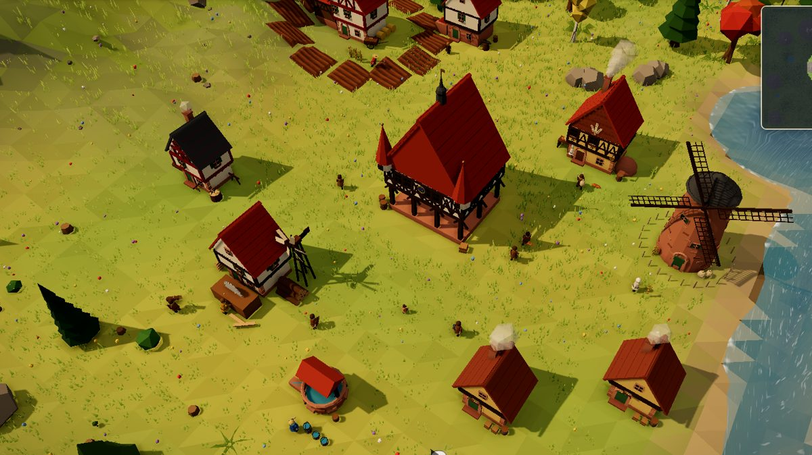
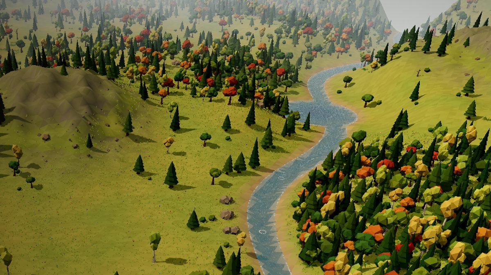
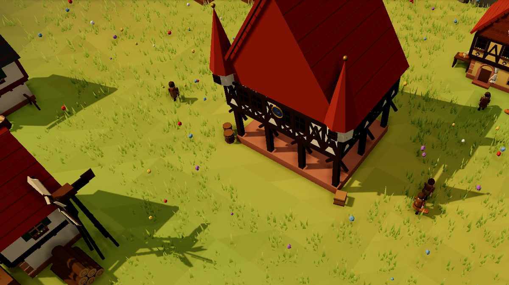

Was dich erwartet
Gründe eine Siedlung in einem grünen Tal, lass deine Leute Wälder roden, Felder bestellen und Erz schürfen – und sieh jedem einzelnen Siedler bei der Arbeit zu.
Lebendige Siedlung
Über 40 Gebäude im Odenwälder Fachwerkstil – und in jedem siehst du die Arbeit: Bäcker kneten, Schmiede hämmern, Müller mahlen.
Echte Warenwirtschaft
Träger bringen jede Ware einzeln ans Ziel. Lange Produktionsketten vom Baumstamm bis zum Goldschmuck wollen geplant sein.
Wachsende Häuser
Fünf Hausstufen von der Hütte bis zum Herrenhaus mit Garten – jede mit eigenen Bedürfnissen deiner Bewohner.
Bergbau & Gold
Rutengänger spüren verborgene Vorkommen auf. Kohle, Eisen und Gold werden zu Werkzeugen, Waffen und Münzen.
Verteidige dein Land
Wachtürme, Wehrtürme und Burgen erweitern dein Gebiet. Bogenschützen stehen sichtbar auf den Plattformen.
Rivalisierende Herrscher
Bis zu drei Gegner in drei Stärken – von friedlich bis hinterhältig. Oder du siedelst ganz in Ruhe.
Kampagne
„Die Chronik von Valewright – Buch I: Das Erbe des Tals“ in vier Kapiteln.
Deutsch & Englisch
Die fertige Version erscheint zweisprachig.
Erste Eindrücke



Bilder aus der frühen Entwicklungsversion – Grafik und Inhalte können sich noch ändern.